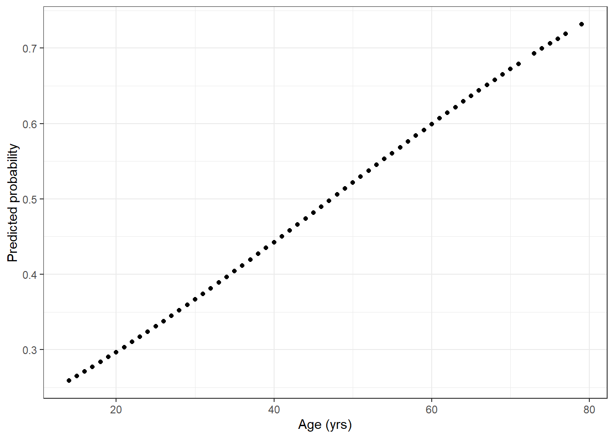
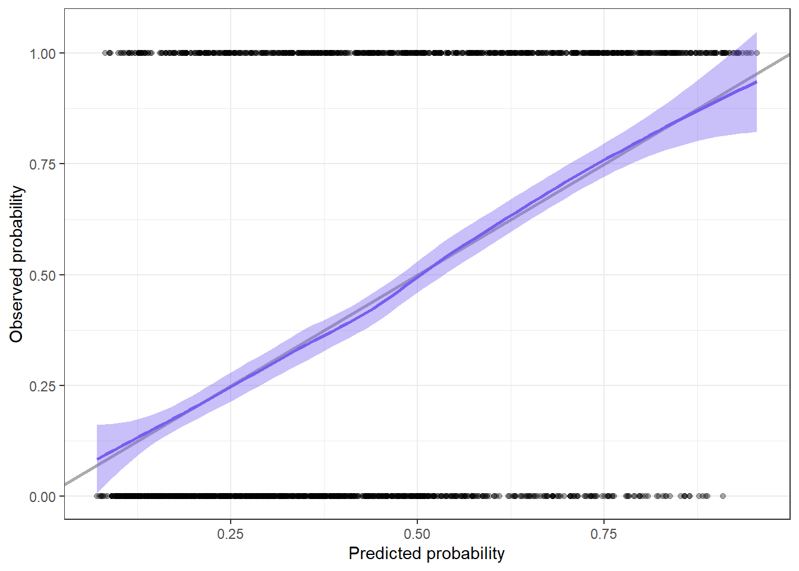
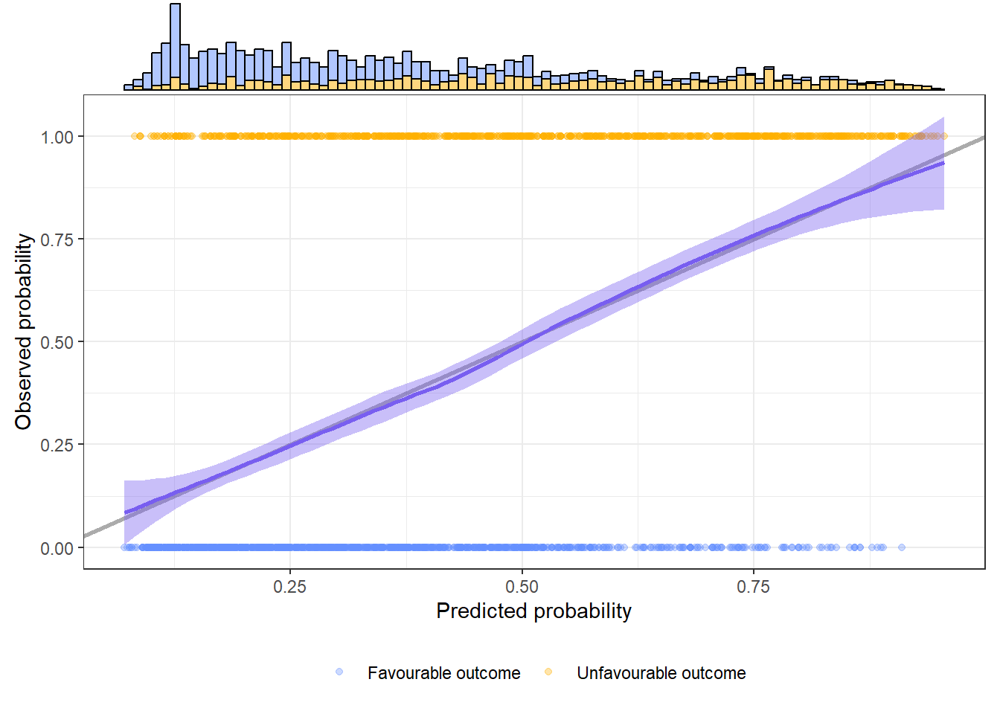
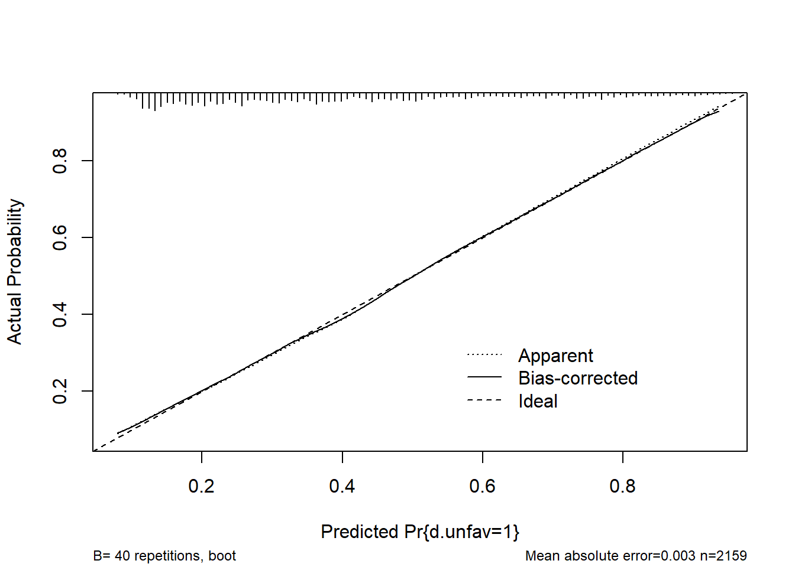
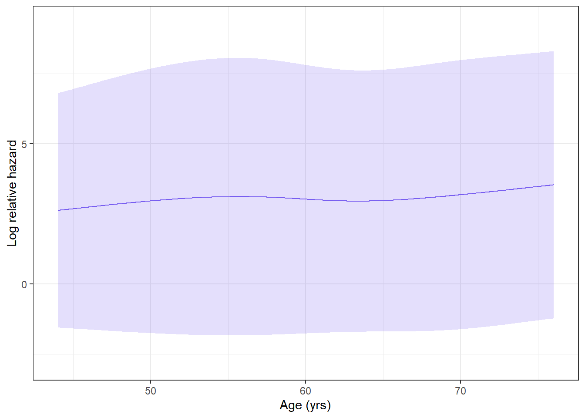
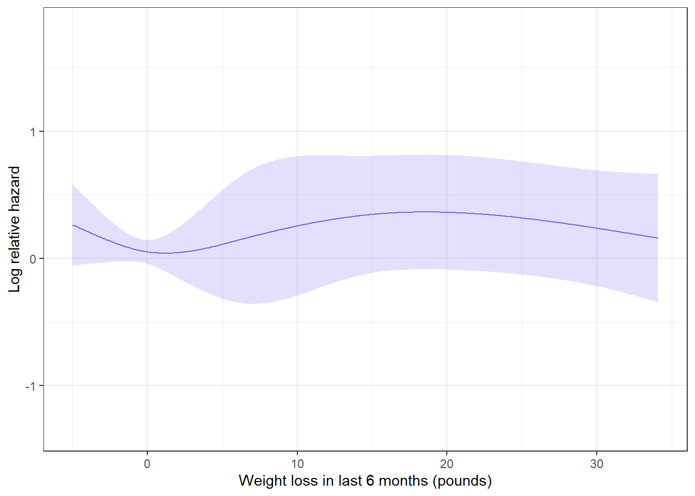

Analysis and Reporting of Prediction Modelling Studies
Author
Roemer J. Janse
Published
September 19, 2024
1 Preface
This R practical will discuss the necessities for prediction modelling in R. However, we assume some basic knowledge on how R works. If you are new to R, we suggest you take a look at this freely available R tutorial. Following the tutorial up until the section ‘dplyr’ should be enough to understand this practical.
2 Introduction
In this practical, we will see what are the minimal requirements to develop a prediction model in R (i.e. not from a statistical point of view) and develop a prediction model ourselves.
At the end of this practical, you will know what is required to develop and validate a prediction model in R. Additionally, you will understand the differences between different packages for prediction modelling.
3 Setting up R
Before we get into the fun part, of course we have to load a number of packages that will help us.
Answer
# Loading packagespacman::p_load("dplyr", # Data wrangling"magrittr", # More efficient pipelines"rio", # Importing data"DescTools", # C-statistic for logistic models"pROC", # C-statistic for logistic models"rms", # Developing prediction models and restricted cubic splines"survival", # Developing Cox prediction models"splines", # Natural cubic splines"mice", # Multiple imputation of data"ggplot2", # Data visualization"ggExtra"# Add-ons for ggplot2)
Note that we use {pacman} instead of the usual approach with install.packages() and library(), but that this requires a one-time prior installation of {pacman}:
install.packages("pacman")
4 Loading data
For this practical, we will use two datasets: * Traumatic brain injury (TBI) data This dataset contains 2,159 patients from the international and US Tirilazad trials (distributed here for didactic purposes only). The primary outcome was the Glasgow Outcome (range 1 through 5) at 6 months. * NCCTG lung cancer data The NCCTG lung cancer dataset contains 228 patients from the North Central Cancer Treatment group, with information on time until death and performance scores.
The TBI dataset was sent to you together with this practical and can be loaded from your local device:
Warning in (function (input = "", file = NULL, text = NULL, cmd = NULL, :
Detected 24 column names but the data has 25 columns (i.e. invalid file). Added
1 extra default column name for the first column which is guessed to be row
names or an index. Use setnames() afterwards if this guess is not correct, or
fix the file write command that created the file to create a valid file.
The warning we receive is the result of row numbers being present in the .txt file (as also guessed by import()). Given that import() guessed correct, we can ignore this warning and treat the extra column V1 as individual identifiers.
The NCCTG lung cancer dataset is provided by the {survival} package and can be loaded from within R:
Answer
lung <- lung
More formally, we could call the lung dataset with:
data(cancer)
However, this will show all related cancer datasets available in {survival} as promises (i.e. available to you but not loaded into memory). If you run lung once, it will be loaded into your global environment:
lung
Nonetheless, the other datasets remain visible as promises in your global environment, which can be rather messy.
Below are the codebooks for both the TBI and the lung data.
Codebooks for the TBI and lung datasets
TBI
Lung
Variable
Description
Variable
Description
V1
Identifier
inst
Institution code
trial
Trial identification
time
Survival time (days)
d.gos
Glasgow Outcome Scale at 6 months
dead
vegetative
severe disability
moderate disability
good recovery
status
Censoring status:
Censored
Dead
d.mort
Mortality at 6 months
age
Age (yrs)
d.unfav
Unfavourable outcome at 6 months
sex
Biological sex
Male
Female
cause
Cause of injury
road traffic accident
motorbike
assault
domestic/fall
other
ph.ecog
ECOG performance score as rated by the physician
asymptomatic
symptomatic but completely ambulatory
in bed <50% of the day
in bed >50% of the day but not bedbound
bedbound
age
Age (yrs)
ph.karno
Karnofsky performance score rated by the physician (range 0-100)
d.motor
Admission motor score (range 1-6)
pat.karno
Karnofsky performance score as rated by patient
d.pupil
Pupillary reactivity
both reactive
one reactive
none reactive
meal.cal
Calories consumed at meals
pupil.i
Single imputed pupillary reactivity
wt.loss
Weight loss in last six months (pounds)
hypoxia
Hypoxia before or at admission
hypotens
Hypotension before or at admission
ctclass
Marshall CT classification (range 1-6)
tsah
tSAH at CT
edh
EDH at CT
cisterns
Compressed cisterns at CT
no
slightly
fully
shift
Midline shift >5 mm at CT
glucose
Glucose at admission (mmol/L)
glucoset
Truncated glucose values (mmol/L)
ph
pH
sodium
Sodium (mmol/L)
hb
Hemoglobin (g/dL)
hbt
Truncated hemoglobin (g/dL)
5 Predicting an unfavourable outcome
We will develop a prediction model for the risk of an unfavourable outcome after a TBI. As a first step, let’s better understand our data.
5.1 Getting to know our data
The degree to which a prediction model is likely not overfitted depends in part on the number of cases and non-cases:
Answer
# Counts of non-cases and casestable(tbi[["d.unfav"]])
0 1
1308 851
Answer
# Distribution of non-cases and cases (as %)proportions(table(tbi[["d.unfav"]])) *100
0 1
60.5836 39.4164
In the TBI dataset, we can see that we have quite a lot of cases (n = 851, 39.4%).
We (hypothetically) consulted some TBI experts, who told us that the most important predictors we want to include are motor activity (‘d.motor’), pupillary reactivity (‘d.pupil’), TBI cause (‘cause’), and age (‘age’). Although we will estimate quite a lot of coefficients (12) because motor activity, pupillary reactivity, and cause are categorical, we also have quite some events so we are not too worried about overfitting.
Because age is continuous, we should investigate whether adding it as a linear term is sufficient or if we model it non-linearly. We can do this by modelling the outcome as a function of age and visually inspecting the results.
Answer
# Model the outcome as a function of age1fit <-glm(d.unfav ~ age, data = tbi, family = binomial)# Plot predicted probabilities vs. age2ggplot(data = tbi, aes(x = age, y = fit[["fitted.values"]])) +# Geometries3geom_point() +# Labels4xlab("Age (yrs)") +ylab("Predicted probability") +# Aesthetics5theme_bw()
1
Fit a logistic regression model with the outcome ‘d.unfav’ as a function of age.
2
Create the basis for a plot, where age is on the x-axis and the fitted values from the logistic regression model are on the y-axis.
3
Draw points in the plot based on the data.
4
Change the axes labels.
5
Change the look of the plot to a pre-specified theme.

From the figure, we can see that age is linearly associated with the outcome, so we do not need to apply any further transformation.
5.2 Method I: glm()
5.2.1 Developing the prediction model
We can now develop our prediction model. Because the outcome is binary, we will use a logistic regression model. Because a logistic regression model is part of the generalized linear models (GLM) family, we can use the glm() function as already done above. We specify that the family (i.e. the distribution of the data) is binomial (0 or 1), which specifies that we are fitting a logistic model.
Answer
# Develop the prediction model1fit <-glm(d.unfav ~2 age +3as.factor(d.motor) +as.factor(d.pupil) +as.factor(cause), 4data = tbi, family = binomial)
1
Fit a logistic regression model with the outcome ‘d.unfav’.
2
Add age as a normal predictor (because we saw it was linearly associated with the outcome).
3
Add the categorical predictors as factors (to make sure R recognizes them as categories).
4
Specify that the data source and the family to define a logistic model.
Let’s see what the output looks like:
Answer
# Print outputsummary(fit)
Call:
glm(formula = d.unfav ~ age + as.factor(d.motor) + as.factor(d.pupil) +
as.factor(cause), family = binomial, data = tbi)
Coefficients:
Estimate Std. Error z value Pr(>|z|)
(Intercept) -1.633692 0.660303 -2.474 0.013355 *
age 0.037503 0.004037 9.289 < 2e-16 ***
as.factor(d.motor)2 0.648468 0.621264 1.044 0.296583
as.factor(d.motor)3 0.057519 0.614843 0.094 0.925466
as.factor(d.motor)4 -0.660139 0.609902 -1.082 0.279089
as.factor(d.motor)5 -1.304401 0.610827 -2.135 0.032723 *
as.factor(d.motor)6 -1.628588 0.680168 -2.394 0.016648 *
as.factor(d.pupil)no reactive pupils 1.285761 0.148476 8.660 < 2e-16 ***
as.factor(d.pupil)one reactive 0.552311 0.148264 3.725 0.000195 ***
as.factor(cause)domestic/fall 0.326742 0.247825 1.318 0.187357
as.factor(cause)Motorbike 0.162727 0.245626 0.662 0.507652
as.factor(cause)other 0.435268 0.245729 1.771 0.076505 .
as.factor(cause)Road traffic accident 0.183664 0.231363 0.794 0.427292
---
Signif. codes: 0 '***' 0.001 '**' 0.01 '*' 0.05 '.' 0.1 ' ' 1
(Dispersion parameter for binomial family taken to be 1)
Null deviance: 2726.7 on 2035 degrees of freedom
Residual deviance: 2251.5 on 2023 degrees of freedom
(123 observations deleted due to missingness)
AIC: 2277.5
Number of Fisher Scoring iterations: 4
The attentive reader might notice that in one of the last lines, the following message is printed:
(123 observations deleted due to missingness)
It is important to realize that, like much statistical software, individuals with missing values are excluded by default. However, if the missingness is informative (which is often the case), this likely results in a biased prediction model (and we lose some power). Luckily, the TBI data is supplied with the variable ‘pupil.i’. This is a single imputed version of ‘d.pupil’. Although single imputation is often unsatisfactory, for our current didactic purposes it is enough.
If we refit the model with the imputed variable, we get:
Answer
# Develop the prediction modelfit <-glm(d.unfav ~ age +as.factor(d.motor) +as.factor(pupil.i) +as.factor(cause), data = tbi, family = binomial)# Print outputsummary(fit)
Call:
glm(formula = d.unfav ~ age + as.factor(d.motor) + as.factor(pupil.i) +
as.factor(cause), family = binomial, data = tbi)
Coefficients:
Estimate Std. Error z value Pr(>|z|)
(Intercept) -1.462684 0.643773 -2.272 0.02308 *
age 0.037715 0.003887 9.703 < 2e-16 ***
as.factor(d.motor)2 0.482682 0.607106 0.795 0.42658
as.factor(d.motor)3 -0.068894 0.601206 -0.115 0.90877
as.factor(d.motor)4 -0.739708 0.596682 -1.240 0.21509
as.factor(d.motor)5 -1.378086 0.597590 -2.306 0.02111 *
as.factor(d.motor)6 -1.784168 0.667584 -2.673 0.00753 **
as.factor(pupil.i)no reactive pupils 1.270588 0.142312 8.928 < 2e-16 ***
as.factor(pupil.i)one reactive 0.578122 0.142276 4.063 4.84e-05 ***
as.factor(cause)domestic/fall 0.182092 0.235049 0.775 0.43852
as.factor(cause)Motorbike 0.075287 0.233211 0.323 0.74683
as.factor(cause)other 0.356963 0.232921 1.533 0.12539
as.factor(cause)Road traffic accident 0.117619 0.219094 0.537 0.59138
---
Signif. codes: 0 '***' 0.001 '**' 0.01 '*' 0.05 '.' 0.1 ' ' 1
(Dispersion parameter for binomial family taken to be 1)
Null deviance: 2895.5 on 2158 degrees of freedom
Residual deviance: 2410.3 on 2146 degrees of freedom
AIC: 2436.3
Number of Fisher Scoring iterations: 4
The message on observations removed due to missingness is now gone (because no individuals were removed).
5.2.2 Validating the prediction model
Now that we have a prediction model, we have to make sure it actually works. To do this, we compare the observed and the predicted values. To this end, we will have to somehow get the predicted values from the prediction model.
There are two easy ways to do that:
Answer
# Get predicted values from model fit object1tbi[["preds"]] <- fit[["fitted.values"]]# Get predicted values from function2preds_fun <-predict(fit, type ="response")# Compare values3table(tbi[["preds"]] == preds_fun)
1
The predicted values are already stored in the model fit object. This makes it easy for us to extract and use those values.
2
We can also use the predict function. The predict function contains many subclasses that recognize what type of model we fitted. In this case, R automatically detects it should use the subclass predict.glm(). By defining ‘response’, we tell R that we want the predicted probabilities. The advantage of predict() is that we can also supply the newdata argument. By supplying newdata with a data frame with column names corresponding to the predictors, the predict() function calculates predictions for this new data.
3
We can see that the predictions are the same for each individual.
TRUE
2159
With these predictions, we can calculate our C-statistic:
Answer
# Calculate C-statistic with the Cstat() function from the {DescTools} package.Cstat(fit)
[1] 0.7651261
To calculate our calibration intercept and calibration slope, we will need the linear predictors.
Answer
# Get linear predictors from model fit for calibration intercept and slope1tbi[["lps"]] <- fit[["linear.predictors"]]# Calculate calibration intercept and slope 2fit_lps <-glm(d.unfav ~ lps, data = tbi, family = binomial)# Get intercept and slope3cat("Intercept:", format(round(fit_lps[["coefficients"]][["(Intercept)"]], 3), nsmall =3))cat("\nSlope:", format(round(fit_lps[["coefficients"]][["lps"]], 3), nsmall =3))
1
As with getting the predicted values, we can use the model fit, or use the predict() function with type = "link", which has the advantage of allowing new data.
2
We refit the regression model used to develop our prediction model with the outcome as a function of the linear predictors.
3
Print the intercept and the slope (i.e. the regression coefficient for the linear predictors). round() rounds the values and format() prints the decimals up to the value supplied in nsmall, even if they are only 0’s.
We create a base layer with the data for the calibration plot.
2
We add the harmonisation line that shows perfect calibration, which is 67% transparent (alpha = 0.33).
3
We draw points on the plot that represent the predicted vs. observed values for each individual.
4
Because we have this data, we can also draw a locally estimated scatterplot smoothing (LOESS) curve which shows the calibration over the range of predicted values.
5
We define the labels for the axes.
6
We change the look of the plot based on a prespecified theme.

We can also add the histogram of predicted probabilities using ggMarginal() from {ggExtras}.
To have two separately coloured histograms for individuals with and without the outcome, we need to specify on what variable to stratify colour. As a side effect, this also colours the points drawn with geom_point().
2
With a manual scale, we define the colours and labels corresponding to each colour.
3
We slightly adjust the theme by moving the legend to the bottom of the plot and removing the title of the legend.
4
We add the histograms to the plot.

5.3 Method II: lrm()
We now used the glm() function from one of the base R packages ({stats}). However, there is another package that is often used to develop prediction models: {rms}.
5.3.1 Developing the prediction model
To develop our prediction model using {rms}, we use the function lrm() for a logistic regression model.
Answer
# First, set numeric variables to factor (lrm() does not work with as.factor())tbi[["d.motor"]] <-as.factor(tbi[["d.motor"]])# Develop the prediction modelfit_rms <-lrm(d.unfav ~ age + d.motor + pupil.i + cause, 1data = tbi, x =TRUE, y =TRUE)
1
We have to specify x and y as TRUE to use the functions for validation in {rms}.
5.3.2 Validating the prediction model
The {rms} package offers an easy function validate prediction models: validate().
How do we interpret this output? The validate() function applies resampling, which is a method to account for overfitting, with the results being printed in the ‘index.corrected’ column. However, if we are just interested in the apparent performance, we can just look at ‘index.orig’. To calculate the C-statistic, we can use \(c = \frac{Dxy}{2} + 0.5\). In our case, the C-statistic would be:
Answer
# Calculate C-statistic0.5390/2+0.5
[1] 0.7695
The intercept and slope are given under ‘Intercept’ and ‘Slope’. To get the calibration plot, we can use the calibrate() function (which aims to give overfitting-corrected estimates):
Answer
# Get calibration dataplot(calibrate(fit_rms))

n=2159 Mean absolute error=0.003 Mean squared error=2e-05
0.9 Quantile of absolute error=0.008
5.4 Method I or Method II?
So why would we pick one method over the other? Well, both methods have their advantages and disadvantages. It may be clear that {rms} has more native (i.e. inherent in the package) support for prediction modelling in the terms of validation with functions such as validate() and calibate(). Additionally, it makes it easy to get optimism-corrected performance measures. However, {rms} forces you to keep using the functions from its package, which are not always user intuitive. Moreover, only a few packages have been created as add-ons to {rms}, which makes it difficult to integrate into other analyses, or analyses that were not implemented/supported by the author. Conversely, glm() is part of the {stats} package, one of the base packages of R. A huge amount of packages have been developed which built on results from glm(). Additionally, as a base function of R, there is more focus on intuitive use and error-proofing.
5.5 The curse of the model fit object
Whether we develop a prediction model using glm() or lrm(), functions such as predict(), validate(), and calibrate(), require us to supply the model fit object: the R object which contains the fitted model. This makes it much easier for the developer of the prediction model (who has the model fit object) to determine performance. However, validation becomes much more difficult. Either the validator needs to be supplied with the model fit object (meaning a certain level of skill in the corresponding programming language of the model fit object is required), or the validator needs to use functions that do not require the model fit.
Because the model fit object is often not supplied, the validator has to resot to the functions that do not require the model fit. For the C-statistic, this could be roc() from the {pROC} package. However, to get the linear predictors, the modeller could use predict(), but the validator will have to calculate these based on the coefficients. This can mean a lot of (unnecessary) manual work, including the risk of error when writing down the predictor coefficients.
6 Predicting survival in advanced lung cancer
We will now also develop a survival prediction model based on Cox regression using the lung dataset. We will use the {survival} package, which is part of the core R packages and which is closely related to the glm() function. As a second method, we will use the cph() function from {rms} package.
6.1 Getting to know our data
We (again hypothetically) consulted some lung cancer experts, who told us that the most important predictors we want to include are age (‘age’), biological sex (‘sex’), and weight loss in the last six months (‘wt.loss’) and that we should predict death within two years. Because weight loss had some missings, we used single imputation. Again, given the didactic purpose of this practical, this is fine, but in a real research setting, multiple imputation should be used.
Answer
# Single imputation of datlung <-complete(mice(lung, m =1))
Additionally, some survival times go beyond two years, so let’s cap those survival times.
Answer
# Cap survival times to two yearslung <- lung %>%# Change variablesmutate(# Set status to censored if we observed individuals longer than two years 1status =ifelse(time >365.25*2, 1, status),# Cap time to two years2time =ifelse(time >365.25*2, 365.25*2, time))
1
If individuals died after two years, we did not observe an event within two years, therefore they become censored. Two years is defined by 365.25 * 2. ::: {.column-margin} Note that we use 365.25 days in a year. Although formally this should be 365.24, the second decimal is negligible for most follow-up durations in medical studies. :::
2
We change the time until event to a maximum of two years. If the time is already shorter than two years, we keep that time.
The degree to which a prediction model is likely not overfitted depends in part on the number of cases and non-cases:
Answer
# First, recode status to 0 and 1lung[["status"]] <- lung[["status"]] -1# Counts of non-cases and casestable(lung[["status"]])
0 1
69 159
Answer
# Distribution of non-cases and cases (as %)proportions(table(lung[["status"]])) *100
0 1
30.26316 69.73684
In the lung dataset, we can see that we have more cases than non-cases. In this case, we look at the number of non-cases to get an idea of the risk of overfitting. Given the already small sample size and the small number of non-cases (n = 69, 30.3%), we likely have a high risk of overfitting. Given the scope of this practical, we will leave that be for now, but recommend that in real research settings, you evaluate this risk and carefully choose a path forward.
Because age and weight loss are continuous, we should investigate whether adding them as a linear term is sufficient or if we should model them non-linearly. Instead of the predicted probability, we plot the log relative hazard as a function of the predictor, using a function from {Hmisc}, which combines functions from {rms} and {survival}.
Answer
# Model the outcome as a function of agedat_plot <-do.call("cbind", rcspline.plot(x = lung[["age"]], y = lung[["time"]], noprint =TRUE,event = lung[["status"]], model ="cox", statloc ="none")) %>%# Change to data frameas.data.frame()
Although the function already gives us a plot, the author of this practical is of the opinion that it is quite an ugly plot, so we will plot it ourselves:
Answer
# Get plotggplot(dat_plot, aes(x = x, y = V3)) +# Geometriesgeom_ribbon(aes(ymin = V4, ymax = V5), fill ="#785EF0", alpha =0.2) +geom_line(colour ="#785EF0") +# Scalingscale_y_continuous(limits =c(min(dat_plot[["V4"]]) -1, max(dat_plot[["V5"]]) +1), name ="Log relative hazard") +# Labellingxlab("Age (yrs)") +# Aestheticstheme_bw()

Now we repeat this for weight loss.
Answer
# Model the outcome as a function of agedat_plot <-do.call("cbind", rcspline.plot(x = lung[["wt.loss"]], y = lung[["time"]], noprint =TRUE,event = lung[["status"]], model ="cox", statloc ="none")) %>%# Change to data frameas.data.frame()
Answer
# Get plotggplot(dat_plot, aes(x = x, y = V3)) +# Geometriesgeom_ribbon(aes(ymin = V4, ymax = V5), fill ="#785EF0", alpha =0.2) +geom_line(colour ="#785EF0") +# Scalingscale_y_continuous(limits =c(min(dat_plot[["V4"]]) -1, max(dat_plot[["V5"]]) +1), name ="Log relative hazard") +# Labellingxlab("Weight loss in last 6 months (pounds)") +# Aestheticstheme_bw()

Although for age a linear association is fine, we will need some kind of non-linear transformation for weight loss to accurately capture it in the prediction model.
6.2 Method I: coxph()
To develop the prediction model, we will use the coxph() function from the {survival} package. This works just like glm() in how we specify the prediction model, except that we specify the outcome using the Surv() function.
Answer
# Develop the prediction model1fit <-coxph(Surv(time, status) ~2 age + sex +3ns(wt.loss, knots =c(0, 17)),data = lung)
1
Fit a Cox regression model, with the outcome being a survival object containing the event and time to event.
2
Add predictors age (linearly) and sex.
3
Add weight loss as a natural cubic spline using the ns() function from {splines}. We put knots at 0 and 17 based on the previous graph.
We see that weight loss has three coefficients, one for the lowest value through 0 (1), one for 0 through 10 (2), and one for 10 through the highest value (3). Also note that we do not have an intercept: to calculate the final predicted risk, we need to use the baseline hazard instead of the intercept. However, the baseline hazard is different for each timepoint.
We can use basehaz() to calculate the baseline hazard at our timepoint of interest (2 years):
Answer
# Retrieve baseline hazard at 2 yearsfilter(basehaz(fit), time ==365.25*2)[["hazard"]]
[1] 2.143102
Discrimination of this model can be calculated using Harrell’s C-statistic: * The function cindex() from the {dynpred} package (does not require model fit, but does require development formula). * The function rcorr.cens() from the {Hmisc} package (does not require model fit, but may be slow). * The function cIndex() from the {intsurv} package.
The calibration slope can be calculated as before, using coxph() and a calibration can also be drawn using the same methods as discussed before. In the case of competing risks, take note of validation measures for competing risk settings. More on that can be found in Van Geloven et al. 2021 and Ramspek et al. 2021.
6.3 Method II: cph()
We can also use cph() from {rms}. Although this is an extension of coxph() from {survival}, the returned model fit object can be used with the validate() and calibrate() functions from {rms}:
Answer
# Develop the prediction modelfit <-cph(Surv(time, status) ~ age + sex +1rcs(wt.loss),data = lung)
1
This time, we use rcs() from {rms} instead of ns() from {splines}. The advantage of rcs() is that it does not transform the underlying variable (i.e. not a B-spline matrix basis for a natural cubic spline) and is therefore easier to interpret and write down in a concise formula. However, we are forced to use at least 3 knots meaning more coefficients are estimated, whilst ns() allows us to use a single knot. Note that we can both use rcs() and ns() in both coxph() and cph().
number of knots in rcs defaulting to 5
6.4 The curse of the model fit object revisited
We already saw that with the model fit object, validation of a prediction model becomes quite easy.
Using predict()
If we use predict() to calculate the survival probability for an individual based on a Cox regression model (thus using predict(fit, type = "survival"), note that the survival probability is not the probability at our specified time horizon, but at the end of their observed follow-up. Therefore, we cannot use this to calculate predictions (see also this issue opened by the author of this practical, who turned out to be wrong but learned along the way)
To get individual predictions, instead use predict(fit, type = "lp") and calculate the survival probability from the linear predictor using \(\hat{y}(t) = 1 - S_0(t)^{e^{LP_i}}\) where \(S_0(t) = e^{-H_0(t)}\) and \(H_0(t)\) is the baseline hazard.
However, in the absence of a model fit object, the validator may struggle more, especially for Cox regression models. By default, both coxph() and cph() estimate a centered Cox regression model. This means that the reference individual for the model is not someone without any binary predictor and with all continuous variables at 0, but someone without any binary predictor and with all continuous variables at the mean of that variable. If we then want to calculate an individual’s linear predictor, we also should have the linear predictor of the sample (\(LP_{sample}\)). To calculate an individual’s linear predictor for the final prediction, we substract \(LP_{sample}\) from their individual linear predictor \(LP_{individual}\): \(\hat{y}(t) = 1 - S_0(t)^{e^{LP_{individual} - LP_{sample}}}\). More on this can be found in this blogpost.
7 Final words
We have now taken a look at the basics for prediction modelling in R. Although many more packages are available for our goals (e.g. {riskRegression), we introduced the two most commonly used packages. If you start developing or validating a prediction model on your own, look back to this practical and never be afraid to ask, whether that be an experienced modeller, the internet, or (with due caution applied) a large language model.